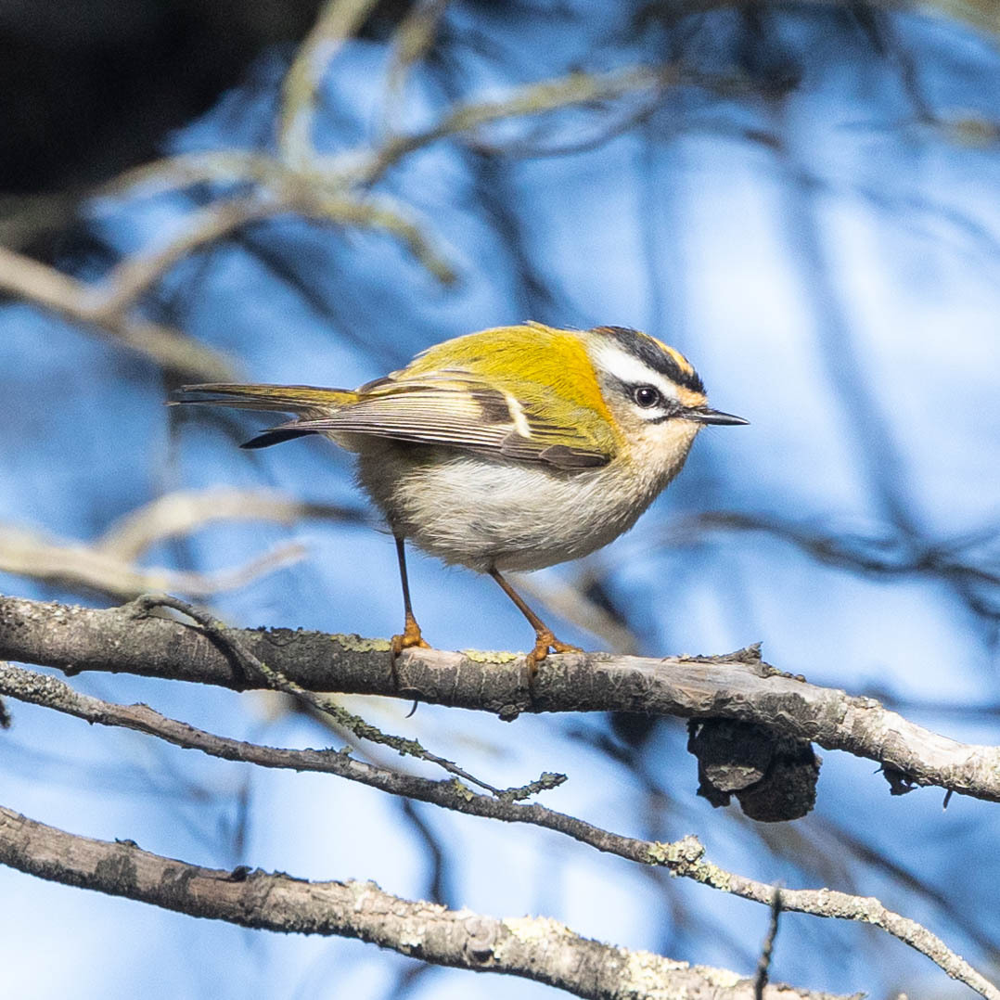

Regulus ignicapilla
الهوية والأسماء
الصعو أحمر العرف، Regulus ignicapilla، عصفوري بالغ الصغر من فصيلة الصعويات Regulidae. يعرف بالإنجليزية باسم Common Firecrest، وبالفرنسية باسم Roitelet triple-bandeau، وتستعمل مراجع مغربية اسم «صعوة ثلاثية الأشرطة». يبلغ طوله نحو 9 سم، وباع جناحيه حوالي 14–15 سم، ووزنه قرابة 5–6 غرامات، أي إنه أصغر كثيرًا من عصفور الدوري. وقد يرد اسمه العلمي بصيغة Regulus ignicapillus في بعض الأدلة، بينما تعتمد AviList الصيغة ignicapilla. أما الصعو أصفر العرف، المشابه له، فهو نوع مستقل وليس ريشًا موسميًا للطائر نفسه.
علامات التعرف
أهم علامة للتعرف هي الوجه: حاجب أبيض طويل وواضح فوق خط عين داكن، بخلاف الوجه الأبسط نسبيًا عند الصعو أصفر العرف. وتكمل الصورة أجزاء علوية زيتونية وأسفل فاتح وشريطان أبيضان على الجناح وبقع كتفية برونزية اللون. يتوسط تاج الذكر لون برتقالي، بينما يكون تاج الأنثى أصفر، ويحد اللون ريش داكن. ولا تضاهي لمحة سريعة للتاج بين الأوراق وضوح رؤية الوجه، خاصة مع تغير الإضاءة وزاوية النظر. لذلك لا ينسب كل طائر صغير ذي تاج أصفر إلى هذا النوع قبل التحقق من الحاجب وخط العين.
الموائل والغذاء والسلوك
يفتش بين الصنوبريات والأشجار المختلطة والشجيرات والغطاء الورقي المحمي عن لافقاريات دقيقة، منها العناكب وبيض الحشرات. ويستعمل منقاره الرفيع لفحص النباتات متنقلًا بسرعة بين الأغصان، بدل الاعتماد على البذور الكبيرة. وقد يرافق خريفًا وشتاءً طيورًا صغيرة أخرى في مجموعات الغابة المتحركة. ومن المفيد مراقبة هذه المجموعة بهدوء من خارج الغطاء النباتي بدل الدخول وراءها. فالمأوى والأوراق الحاملة للفرائس يكمل أحدهما الآخر؛ وقد توفر حافة غابة تبدو غير مرتبة مساحة غذاء لا تمنحها حافة أزيلت شجيراتها ونظفت بالكامل.
الانتشار والحضور العربي
يتكاثر في مناطق واسعة من أوروبا ويمتد إلى شمال غرب إفريقيا. وتوجد السلالة balearicus في جزر البليار وشمال إفريقيا من المغرب إلى شمال تونس، بما يشمل الجزائر. وتعده قائمة طيور المغرب متكاثرًا مقيمًا وزائرًا شتويًا أيضًا؛ لذلك لا تعني رؤيته هناك في نوفمبر وصوله حديثًا من الخارج. أما لبنان فمختلف: يصنفه الدليل الوطني لعام 2026 زائرًا شاردًا، ويورد سجلات تاريخية قرب بشري وفوق اليمونة. هذه المشاهدات القليلة لا تثبت وجود جماعة شتوية منتظمة في لبنان، كما لا يجوز إسقاط ندرته اللبنانية على مناطق تكاثره المغاربية.
التكاثر ونمو الفراخ
يقام عش كأسي دقيق بين الأغصان أو النباتات المتسلقة، باستعمال مواد منها الحزازيات والأشنات والريش. وتورد BTO حضنة معتادة من 7–10 بيضات، وحضانة أنثوية تستغرق 14–16 يومًا، ومغادرة للعش بالطيران بعد نحو 19–20 يومًا من الفقس، مع حضنتين عادة في حسابها المرجعي. هذه أزمنة تطور إرشادية وليست تقويمًا ثابتًا لكل غابة في شمال إفريقيا. تعتمد الصغار في البداية على البالغات لتغذيتها. وقد يزيل تفريق الأوراق أو كشف العش غطاءه الواقي، ويعرض الحضنة الصغيرة للإزعاج بدل أن يقدم للراصد فائدة ضرورية.
نوفمبر والمراقبة المسؤولة
تبدأ مراقبته في نوفمبر باختيار الموئل المناسب وفهم وضعه في البلد. في غابات المغرب قد تكشف متابعة سرب مختلط بهدوء فردًا مقيمًا أو مشتيًا. أما في لبنان فتحتاج المشاهدة المشتبه بها إلى توثيق دقيق لندرتها: يسجل الحاجب الأبيض وخط العين الداكن والموقع والتاريخ، ويفضل تصويرها من دون مطاردة. ولا يشكل سجل قديم في نوفمبر وعدًا بحضور سنوي. ينبغي البقاء على المسارات وتجنب تكرار تشغيل النداءات وعدم إجبار الطائر على الخروج من الغطاء للحصول على صورة أو تأكيد التعرف.
الحماية
تسجل AviList 2026 فئة الاتحاد الدولي لحفظ الطبيعة العالمية «أقل إثارة للقلق» LC. ومع ذلك تظل الندرة المحلية وجودة الموئل مهمتين، ولا يمثل التصنيف ترخيصًا بالصيد. يساعد اتصال الغابات وتنوع الشجيرات وبقاء الأوراق الغنية بالحشرات على تلبية احتياجاته الغذائية. ويذكر دليل لبنان الصيد غير القانوني وتغير المناخ ضمن التهديدات. لذلك يفيد تجنب المبيدات غير الضرورية والإزعاج المتكرر، خاصة في الطقس البارد. وتخدم الحماية مشاهدة موثقة وطائر يواصل التغذي أكثر مما تخدمها صورة أقرب تحرم الطائر من وقته وغذائه.
المراجع
AviList Core Team — The Global Avian Checklist, v2026; British Trust for Ornithology — BirdFacts: Firecrest; The Wildlife Trusts — Firecrest; SongBird Survival — Firecrest; UNDP / ABCL / Ministry of Environment — Birds of Lebanon, second edition, 2026, p. 335; Bergier et al. — Liste des oiseaux du Maroc, 2017; Avibase — Common Firecrest.
الصورة: Paulo Caseirito